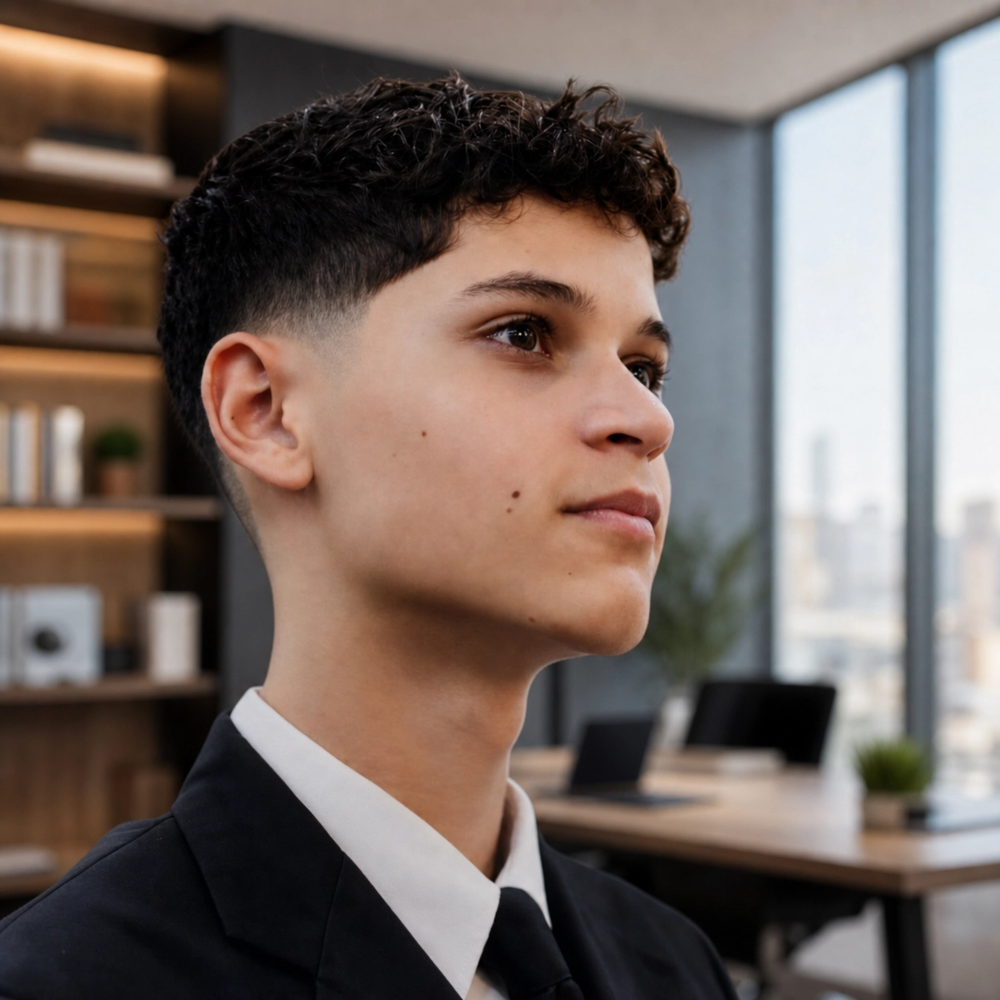

Explorando hábitos, tradiciones familiares y la belleza de lo cotidiano a través de la escritura.
Un viaje a través de mis pasiones, experiencias y lo que me define.
Hola, soy un estudiante apasionado por la escritura y la narración de historias. Desde pequeño, siempre me ha fascinado documentar los momentos cotidianos que muchas personas pasan por alto.
Este blog nació como una actividad escolar, pero se convirtió en algo mucho más significativo: un espacio donde puedo reflexionar sobre mi vida, compartir mis experiencias y conectar con otras personas que comparten mis intereses.
Creo que cada día tiene algo especial que contar, y mi misión es ayudar a otros a ver la belleza en lo ordinario.

Comencé a escribir en un diario personal, documentando mis pensamientos y experiencias escolares.
Participé en un proyecto escolar de escritura creativa que me inspiró a explorar nuevas formas de contar historias.
Lancé este blog como una plataforma para compartir mis reflexiones diarias y conectar con una comunidad más amplia.
El blog ha crecido exponencialmente, con miles de lectores interesados en mis historias y perspectivas sobre la vida.
Especializado en narrativas personales y reflexiones profundas sobre la vida cotidiana.
Captura de momentos especiales que complementan mis historias con imágenes impactantes.
Creación de contenido visual que enriquece la experiencia de mis lectores.
Análisis profundo de temas sociales y personales con perspectivas innovadoras.